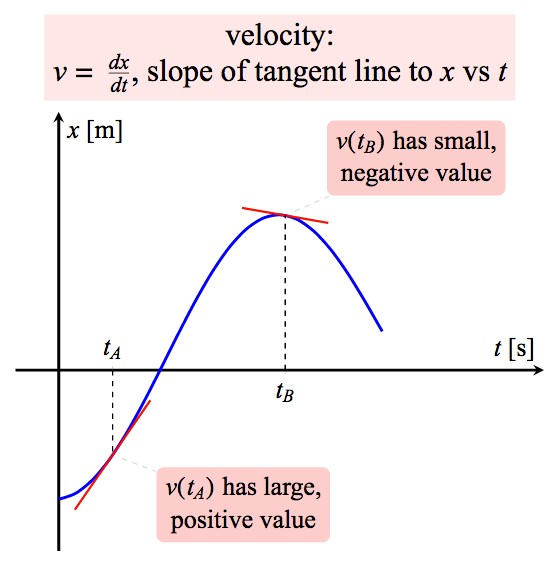

edX
WitsX Introduction to Physics
Concepts
Concept 3: Acceleration Quantifies Change in Motion
Acceleration of a moving object is defined as the rate of change of velocity.
This is the second derivative of position or, in one dimension, a=d2x/dt2=dv/dt. In this graph, the acceleration of an object moving in the x-direction can be determined by finding the slope of the velocity vs. time graph at the moment of interest, or the curvature of a position vs. time graph.
